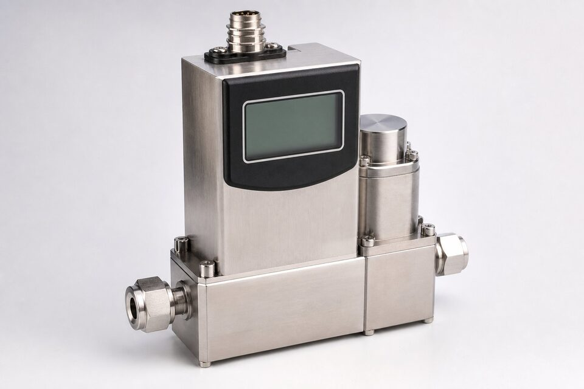

(MFC) چیست و چه چیزی را حل میکند؟
در بسیاری فرایندها، دبی گاز باید با دقت بالا و پایداری بلندمدت کنترل شود: از تزریق گاز به راکتور تا اتمسفر کورهها و خطوط پوششدهی. کنترلکننده دبی جرمی این نیاز را با ترکیب سنسور دبی، شیر کنترل و الکترونیک در یک بدنه پاسخ میدهد. تجهیز، دبی را اندازهگیری و با مقدار تنظیمی مقایسه میکند و شیر داخلی را برای حذف خطا تنظیم مینماید؛ همه اینها در کسری از ثانیه و بدون نیاز به کنترلکننده خارجی. نتیجه، حلقه کنترلی فشرده، سریع و دقیق است که جایگزین ترکیب فلومتر و شیر کنترل جداگانه میشود.

اصل اندازهگیری حرارتی
رایجترین روش اندازهگیری در (MFC)ها، روش حرارتی است: بخشی از گاز از کانال سنسور عبور میکند و گرمای منتقلشده بین دو نقطه اندازهگیری میشود؛ این مقدار با دبی جرمی گاز رابطه مستقیم دارد. چون اندازهگیری مستقیم جرم است، تغییرات دما و فشار خط (در محدوده مشخص) بر خوانش اثر نمیگذارد. در رنجهای بسیار بالا یا برای گازهای خاص، روشهای جایگزین مانند اختلاف فشاری با ضریب تصحیح نیز استفاده میشوند. نکته کلیدی این است که کالیبراسیون برای یک گاز مشخص انجام میگیرد و استفاده از تجهیز برای گاز دیگر نیازمند ضریب تبدیل یا کالیبراسیون مجدد است.
شیر کنترل داخلی
شیر داخلی، نیمه دیگر (MFC) است و معمولا از نوع سلونوئید یا پیزوالکتریک انتخاب میشود. شیر سلونوئید برای رنجهای متوسط و کاربردهای عمومی رایج است؛ شیرهای پیزوالکتریک سرعت پاسخ بالاتر و پایداری بهتری دارند و در کاربردهای حساس و رنجهای پایین ترجیح داده میشوند. وضعیت ایمنی شیر (باز یا بسته در قطع برق) نیز باید متناسب فرایند انتخاب شود؛ در بسیاری کاربردهای گاز خطرناک، بسته شدن در قطع برق الزام ایمنی است.
کاربردهای اصلی
- راکتورها و فرایندهای شیمیایی با تزریق گاز دقیق.
- کورهها و اتمسفرهای کنترلشده عملیات حرارتی.
- صنایع نیمهرسانا و پوششدهی با گازهای خاص.
- آزمایشگاهها و بنچهای تست با نیاز به دبی پایدار.
- سیستمهای اختلاط گاز با چند (MFC) هماهنگ.
معیارهای انتخاب و استعلام
در استعلام (MFC)، شش پارامتر تعیینکننده است: نوع گاز (با ذکر ناخالصیها)، رنج دبی موردنیاز، فشار خط و افت فشار مجاز، دمای کاری، جنس بخش خیس متناسب گاز و سیگنال یا پروتکل ارتباطی. وضعیت ایمنی شیر در قطع برق و الزامات نشتی نیز باید ذکر شود. برای گازهای خورنده یا سمی، متریال بدنه و آببندی اهمیت ویژه پیدا میکند و باید با سازنده نهایی شود. مدارک کالیبراسیون کارخانهای با ذکر گاز مرجع نیز بخشی از تحویل استاندارد است.
جمعبندی
کنترلکننده دبی جرمی، اندازهگیری و کنترل گاز را در یک تجهیز فشرده ارائه میدهد و در نقاطی که دقت گاز حیاتی است، جایگزین حلقههای کنترل پیچیده میشود. با ذکر دقیق گاز و شرایط فرایند در استعلام، میتوان تجهیز کالیبره و متناسب دریافت کرد و از خطاهای ناشی از تغییر گاز یا رنج نامناسب جلوگیری نمود.
سوالات رایج
کنترلکننده دبی جرمی چیست؟
تجهیزی که دبی جرمی گاز را اندازهگیری و با یک شیر داخلی، آن را روی مقدار تنظیمی نگه میدارد؛ یعنی اندازهگیری و کنترل در یک بدنه انجام میشود و نیازی به حلقه کنترل جداگانه نیست.
اصل اندازهگیری رایج در (MFC) چیست؟
روش حرارتی: گاز از کنار یک سنسور گرمشده عبور کرده و مقدار گرمای منتقلشده با دبی جرمی رابطه دارد؛ چون مستقیم جرم را میسنجد، به تغییرات دما و فشار حساس نیست.
کجا به (MFC) نیاز داریم؟
هر جا دبی گاز باید دقیق و پایدار باشد: راکتورهای فرایندی، سیستمهای پوششدهی، کورهها، کاربردهای آزمایشگاهی و نقاط تزریق گاز.
مهمترین معیار انتخاب چیست؟
گاز مورد استفاده و رنج دبی؛ چون کالیبراسیون (MFC) برای گاز مشخص انجام میشود و تغییر گاز بدون ضریب تبدیل یا کالیبراسیون مجدد، خوانش را خطا میاندازد.
مطالب مرتبط
با ذکر گاز، رنج دبی، فشار خط و پروتکل، کنترلکننده دبی جرمی متناسب عرضه میشود.
مشاهده صفحه محصول ← ثبت RFQ همین محصولتامین این تجهیزات را به پیشرو تجهیز فرتاک بسپارید
شرکت پیشرو تجهیز فرتاک تامینکننده تخصصی تجهیزات صنعتی برای پروژههای نفت، گاز، پتروشیمی، فولاد و نیروگاهی است. برای دریافت پیشنهاد فنی و قیمت، استعلام (RFQ) خود را ثبت کنید تا کارشناسان مهندسی فروش در کوتاهترین زمان پاسخ دهند.
- تامین ابزار دقیقترانسمیترها و آنالایزرهای برندهای معتبر
- تامین تجهیزات صنایع نفت و گازپکیج مواد مطابق وندورلیست